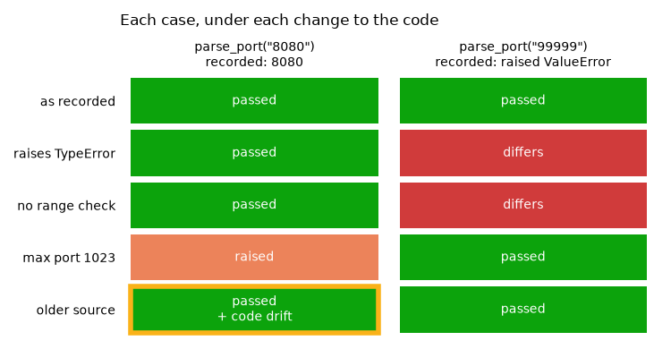

Note
Go to the end to download the full example code.
replay : exceptions and code drift in the report¶
Raising is behaviour too. A function that used to reject bad input and now silently accepts it has regressed just as surely as one that returns the wrong number, so exceptions are recorded, and replay compares them alongside return values.
This page records a parser that raises on bad input, then changes its behaviour in each of the ways the replay report distinguishes. It ends with code drift: the function’s source having changed since it was recorded, which replay reports as a column on each case rather than as a failure.
Setup: where records go¶
The code under test reads its store from the REGRESSION_RECORDS_STORE environment
variable when it is imported, so the variable is set first
(record_func : recording a first call says why).
import os
import tempfile
from pathlib import Path
# In a project: REGRESSION_RECORDS_STORE=tests/regression_data in a .env file, loaded
# with python-dotenv's load_dotenv(). Here: a fresh temporary directory, empty each run.
STORE = Path(tempfile.mkdtemp(prefix="regression-records-"))
os.environ["REGRESSION_RECORDS_STORE"] = str(STORE)
print("store:", STORE)
store: /tmp/regression-records-8vm4sl6p
Setup: the code under test¶
Replay imports a recorded function by module and name, so the code under test lives in
a module, ports, imported from regression_records._examples - support code
that ships with the package so that a page can import real code rather than define it
in a cell (record_func : recording a first call says more). In
your project, this is your own package. Its source, printed below:
The module-level settings let the page change the parser’s behaviour without editing
source: STRICT turns the range check off, RANGE_ERROR changes the exception it
raises and MAX_PORT narrows the range. open_port fails as a flaky network call
would.
import inspect
import json
from contextlib import contextmanager
from regression_records._examples import ports
print(inspect.getsource(ports))
"""A port parser that raises, for the gallery page ``08_exceptions_and_drift``."""
from __future__ import annotations
import os
from regression_records import record_func
# Where records go is configuration, set by whoever runs this code; never set here.
STORE = os.environ["REGRESSION_RECORDS_STORE"]
STRICT = True
RANGE_ERROR: type[Exception] = ValueError
MAX_PORT = 65535
@record_func(STORE)
def parse_port(text: str) -> int:
"""Return ``text`` as a TCP port number, rejecting one out of range."""
port = int(text)
if STRICT and not 0 < port <= MAX_PORT:
raise RANGE_ERROR(f"port out of range: {port}")
return port
@record_func(STORE, record_exceptions=False)
def open_port(port: int) -> None:
"""Fail to connect, as a flaky network call would; never recorded when it raises."""
raise ConnectionError(f"nothing listening on port {port}")
def record_paths() -> list[Path]:
"""Every record file in the store, in a stable order."""
return sorted(STORE.rglob("rec-*.json"))
def show_cases(report) -> None:
"""Print one line per replayed record: its status, function and drift."""
for case in report.cases:
drift = " (code drift)" if case.code_drift else ""
print(
f" {case.status.value:<8} {case.name} record {case.record_id[:8]}{drift}"
)
Recording is off unless switched on; this page switches it on for the whole script.
from regression_records import enable, replay
enable()
Recording a call that raises¶
The exception propagates as usual - recording never swallows or substitutes what a function does - and it is recorded as the call’s result.
print("ok:", ports.parse_port("8080"))
try:
ports.parse_port("99999")
except ValueError as e:
print("raised and recorded:", e)
else:
raise AssertionError("99999 is out of range")
ok: 8080
raised and recorded: port out of range: 99999
What a recorded exception holds¶
Exactly one of output / exception is set on a record. The exception’s type,
message and formatted traceback are all stored - but only the type takes part in
the comparison. Messages routinely carry paths, addresses and timings that would turn
every run into a false mismatch; the message and traceback are there for you to read.
records = [json.loads(p.read_text()) for p in record_paths()]
raised = next(r for r in records if "exception" in r)
print(json.dumps({"exception": raised["exception"]}, indent=2))
assert sum("exception" in r for r in records) == 1
assert all(("output" in r) != ("exception" in r) for r in records)
{
"exception": {
"exc_type": "builtins.ValueError",
"message": "port out of range: 99999",
"traceback_text": "Traceback (most recent call last):\n File \"/home/runner/work/regression-records/regression-records/src/regression_records/_engine.py\", line 191, in _invoke\n return Outcome(value=invoke())\n ^^^^^^^^\n File \"/home/runner/work/regression-records/regression-records/src/regression_records/decorators.py\", line 233, in <lambda>\n lambda: func(*args, **kwargs),\n ^^^^^^^^^^^^^^^^^^^^^\n File \"/home/runner/work/regression-records/regression-records/src/regression_records/_examples/ports.py\", line 22, in parse_port\n raise RANGE_ERROR(f\"port out of range: {port}\")\nValueError: port out of range: 99999\n"
}
}
Replaying it¶
On replay the parser raises ValueError again, which is what the record says it
did, so that case passes just like the one that returned.
passed regression_records._examples.ports:parse_port record ac09cd89
passed regression_records._examples.ports:parse_port record ec885246
replay_changed below replays the store with one of the parser’s settings changed,
and restores it afterwards whatever happens. Each setting stands in for an edit to
ports.py.
@contextmanager
def changed(**settings):
"""Temporarily set module-level settings of ``ports``."""
saved = {name: getattr(ports, name) for name in settings}
for name, value in settings.items():
setattr(ports, name, value)
try:
yield
finally:
for name, value in saved.items():
setattr(ports, name, value)
def replay_changed(**settings):
with changed(**settings):
return replay(STORE)
Raising a different type: differs¶
The range check now raises TypeError. The exception’s type is part of the
behaviour - a caller catching ValueError would no longer catch it - so the case
differs.
report = reports["raises TypeError"] = replay_changed(RANGE_ERROR=TypeError)
show_cases(report)
print()
print(report.failures[0].describe())
assert report.counts()["differs"] == 1
passed regression_records._examples.ports:parse_port record ac09cd89
differs regression_records._examples.ports:parse_port record ec885246
differs: regression_records._examples.ports:parse_port record ec885246 (regression_records/_examples/ports/parse_port/records/rec-71ff8e8efabac1da-ec885246.json)
comparison failed with 1 diff(s):
at '$.output' (exception_mismatch): raised builtins.TypeError, expected builtins.ValueError
No longer raising: differs¶
The other direction - a guard that has gone missing - is the one worth having. The
record says the call raised; now it returns 99999.
report = reports["no range check"] = replay_changed(STRICT=False)
show_cases(report)
print()
print(report.failures[0].describe())
assert report.counts()["differs"] == 1
passed regression_records._examples.ports:parse_port record ac09cd89
differs regression_records._examples.ports:parse_port record ec885246
differs: regression_records._examples.ports:parse_port record ec885246 (regression_records/_examples/ports/parse_port/records/rec-71ff8e8efabac1da-ec885246.json)
comparison failed with 1 diff(s):
at '$.output' (exception_mismatch): the recorded call raised builtins.ValueError, but this call returned normally
Raising where it used to return: raised¶
The range is narrowed, so "8080" is now rejected. The record says the call
returned, and on replay it raised - a status of its own, because it often means
something other than a change in the answer: the call could not run outside its
original context (a clock, a database, an environment variable), or its signature
changed so the recorded arguments no longer fit. case.error names the exception.
report = reports["max port 1023"] = replay_changed(MAX_PORT=1023)
show_cases(report)
print()
print(report.failures[0].describe())
assert report.counts()["raised"] == 1
raised regression_records._examples.ports:parse_port record ac09cd89
passed regression_records._examples.ports:parse_port record ec885246
raised: regression_records._examples.ports:parse_port record ac09cd89 (regression_records/_examples/ports/parse_port/records/rec-162b9fad73470b38-ac09cd89.json)
raised on replay: ValueError: port out of range: 8080
comparison failed with 1 diff(s):
at '$.output' (exception_mismatch): the recorded call returned a value, but this call raised builtins.ValueError: port out of range: 8080
Nothing was recorded by those replays, and with every setting restored the store replays clean.
replayed 2 record(s) from /tmp/regression-records-8vm4sl6p: 2 passed
Turning exception recording off¶
record_exceptions=False makes a raising call a non-event: not recorded, just
propagated. Reach for it when a function raises for reasons that are not about its
behaviour - a flaky network call, a missing local fixture.
try:
ports.open_port(8080)
except ConnectionError as e:
print(f"propagated: {e}")
assert not list(STORE.rglob("open_port/records/*.json"))
propagated: nothing listening on port 8080
KeyboardInterrupt and SystemExit are never recorded whatever this setting says.
They mean the process is going away, not that the function misbehaved.
Code drift¶
code_hash - a hash of the function’s source - is stored on every record. Replay
runs today’s code on recorded inputs, so the source having changed since recording
is expected, not a failure. Replay compares the hashes and reports the answer as
case.code_drift, alongside the recorded and current hashes.
The next cell simulates a code change: it rewrites the code_hash stored in one
record, as if that record had been made from an older version of parse_port.
drifted = next(p for p in record_paths() if "exception" not in p.read_text())
record = json.loads(drifted.read_text())
record["identity"]["code_hash"] = "0" * 16 # simulated: "recorded from older source"
drifted.write_text(json.dumps(record, indent=2))
report = reports["older source"] = replay(STORE)
show_cases(report)
print()
for case in report.cases:
print(
f"{case.status.value:<7} code_drift={case.code_drift!s:<5} "
f"recorded={case.recorded_code_hash} current={case.current_code_hash}"
)
assert report.passed
assert [c.code_drift for c in report.cases].count(True) == 1
passed regression_records._examples.ports:parse_port record ac09cd89 (code drift)
passed regression_records._examples.ports:parse_port record ec885246
passed code_drift=True recorded=0000000000000000 current=f1e241ba8f8bacc8
passed code_drift=False recorded=f1e241ba8f8bacc8 current=f1e241ba8f8bacc8
Both cases still pass: the report says the drifted one passed across a change, which is the good outcome of a refactor - the implementation changed and the behaviour did not. A pass without drift only says that nothing changed.
describe() notes the drift too, so it shows up when a drifted case fails:
print(next(c for c in report.cases if c.code_drift).describe())
passed: regression_records._examples.ports:parse_port record ac09cd89 (regression_records/_examples/ports/parse_port/records/rec-162b9fad73470b38-ac09cd89.json)
code changed since recording (0000000000000000 -> f1e241ba8f8bacc8)
Every replay on this page, case by case¶
One row per replay above, one column per record: the same two recorded calls, judged against five versions of the code. Each status is spelled out in its cell, so the colour is only a second cue.
import matplotlib.pyplot as plt
from matplotlib.patches import Rectangle
STATUS_COLORS = {
"passed": "#0ca30c",
"differs": "#d03b3b",
"raised": "#ec835a",
}
inputs = {
r["record_id"]: f'parse_port("{r["invocation"]["args"][0]}")\n'
+ (
"recorded: raised ValueError"
if "exception" in r
else f"recorded: {r['output']}"
)
for r in records
}
columns = sorted(inputs)
fig, ax = plt.subplots(figsize=(7.5, 3.9))
for row, rep in enumerate(reports.values()):
by_id = {case.record_id: case for case in rep.cases}
for col, record_id in enumerate(columns):
case = by_id[record_id]
status = case.status.value
ax.add_patch(
Rectangle(
(col + 0.04, row + 0.06),
0.92,
0.88,
facecolor=STATUS_COLORS[status],
edgecolor="#fab219" if case.code_drift else "none",
lw=4,
)
)
label = status + ("\n+ code drift" if case.code_drift else "")
ax.text(col + 0.5, row + 0.5, label, ha="center", va="center", color="white")
ax.set_xlim(0, len(columns))
ax.set_ylim(len(reports), 0)
ax.set_xticks([c + 0.5 for c in range(len(columns))], [inputs[c] for c in columns])
ax.xaxis.tick_top()
ax.set_yticks([r + 0.5 for r in range(len(reports))], list(reports))
ax.tick_params(length=0)
ax.grid(False)
for side in ax.spines.values():
side.set_visible(False)
ax.set_title("Each case, under each change to the code", loc="left", pad=40)
fig.tight_layout()
statuses = [c.status.value for rep in reports.values() for c in rep.cases]
assert set(statuses) == set(STATUS_COLORS)

The last row, as the report a script or a CI log would show:
print(reports["older source"].summary())
replayed 2 record(s) from /tmp/regression-records-8vm4sl6p: 2 passed
Drift is not a failure in replay() and has no effect on report.passed. Under
replay_tests (replay_tests : one pytest test per record)
a passing case with drift also emits a CodeDriftWarning; to make drift fail a
suite, promote the warning, in pyproject.toml:
[tool.pytest.ini_options]
filterwarnings = ["error::regression_records.CodeDriftWarning"]
or check the column yourself after a plain replay:
drifted = [case.name for case in report.cases if case.code_drift]
Next: to_json_tree, from_json_tree : custom classes stored by their attributes - recording your own classes, with no configuration.
Total running time of the script: (0 minutes 0.112 seconds)